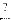

| Parameter | Variable | Description |
|---|---|---|
| Max Delay (2) | MaxDelay | The maximum length of the delay (i.e. the BRAM Size). |
| BRAM Latency | bram_latency | The latency of the underlying storage BRAM. |
| Port | Dir. | Data Type | Description |
|---|---|---|---|
| din | in | ??? | The signal to be delayed. |
| delay | in | ??? | The run-time programmable delay length. |
| dout | in | ??? | The delayed signal. |